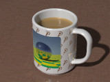
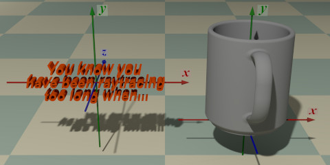
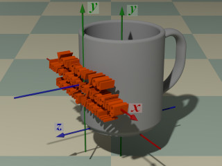
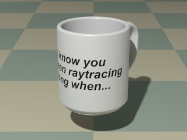

A library module from the Persistence of Vision Raytracer (POV-Ray) Object Collection.
 Some objects, though not used directly in office work, are nevertheless indispensable for the efficient functioning of the office. This module defines macros for a coffee mug and a beverage object to fill it.
| Key Files | |
|---|---|
| File | Description |
coffeemug.html |
The user manual (this document) |
coffeemug.inc |
The CoffeeMug library |
coffeemug.pov |
An example scene description file, demonstrating how to use coffeemug.inc. |
coffeemug_map.jpg |
An image used by the example scene description file |
coffeemug.jpg |
Sample output images |
coffeemug_thumbnail.jpg |
|
coffeemug_fig1.jpg |
Illustrations for the user manual |
coffeemug_fig4.jpg |
|
coffeemug_fig5.jpg |
|
| Administrative Files | |
| File | Description |
READMEnnnnnn.html |
Important information about using the POV-Ray Object Collection |
coffeemug_description.txt |
A brief description of CoffeeMug |
coffeemug_keywords.txt |
A list of keywords |
coffeemug_prereqs.txt |
Prerequisites (empty file) |
coffeemug.css |
Other administrative files |
cc-LGPL-a.png |
|
Versionnnnnnn.js |
|
The italicized nnnnnn in some of the file names represents the 6-digit number that is in the name of the .zip file. If you downloaded this module from a repository other than lib.povray.org, the files cc-LGPL-a.png, READMEnnnnnn.html, and Versionnnnnnn.js may not be present. Please see the Object Collection User’s Guide if the README file is not present.
Note: The file coffeemug_cc-lgpl.png is no longer used.
CoffeeMug requires POV-Ray version 3.5 or later.
All file names in this module and all global and local identifiers defined in coffeemug.inc comply fully with the Object Collection naming standards, as revised August 2008 and proposed August 2012. The files in this module may be safely stored in the same folder as other fully compliant Object Collection modules.
The reserved prefixes for this module are “CoffeeMug” and “Mug,” including any uppercase and lowercase variants. To avoid conflicts, do not introduce into your scene description file any identifiers with either of these prefixes as names, or any identifiers that start with either of these prefixes plus an underscore.
The identifier View_POV_Include_Stack from the standard include file debug.inc is referenced by coffeemug.inc, although debug.inc itself is not used.
Include this file once prior to using the macros:
#include "coffeemug.inc"
Including the file more than once is harmless, though unnecessary.
An untextured coffee mug, with the bottom center of the mug at the origin, and the handle pointing in the negative z direction.
| Formal Parameter | Type | Description |
|---|---|---|
Radius |
float | The outer radius of the mug. |
Capacity |
float | The height or net volume of the mug. The unit of measure is determined by the Units argument. |
Units |
float | Determines the units of measure. |
Use_merge |
float/Boolean | Whether to use a union or a merge. In general, pass yes if the mug is to be transparent, no otherwise. |
Note: CoffeeMug_Mug() calls macro CoffeeMug_Detail(), supplying its own automatically calculated arguments. If the mug is very short, the calculated handle dimensions will trigger a warning from CoffeeMug_Detail().
An untextured coffee mug with more user control over the dimensions. The bottom center of the mug is at the origin, and the handle points in the negative z direction.
| Formal Parameter | Type | Description |
|---|---|---|
Radius |
float | The outer radius of the mug. |
Wall |
float | The thickness of the wall. |
Capacity |
float | The height or net volume of the mug. The unit of measure is determined by the Units argument. |
Units |
float | Determines the units of measure. |
v_Handle |
vector | The dimensions of the handle. |
Handle_space |
float | The horizontal finger space between the handle and the wall of the mug. |
Use_merge |
float/Boolean | Whether to use a union or a merge. In general, pass yes if the mug is to be transparent, no otherwise. |
A beverage pre-sculpted to fit the coffee mug. The object is untextured, so you can create and apply your own materials for black coffee, café au lait, cocoa, tea, apple cider, Dasani®, rum and Coke®, or any of a number of other quaffs. The object will not contour to the rim of the mug. Carbonation for rum and Coke is available separately from the Object Collection’s bubble module.
Due to some technical considerations, no beverage materials are defined in coffeemug.inc. However, the example scene coffeemug.pov demonstrates an example material for café au lait, which you can copy and modify to your taste.
| Formal Parameter | Type | Description |
|---|---|---|
Radius |
float | The outer radius of the mug for which the beverage is intended. |
Wall |
float | The thickness of the mug’s wall. Use 0 if the mug is created with CoffeeMug_Mug(). |
Capacity |
float | The height or volume of the beverage. The unit of measure is determined by the Units argument.
Note: The meniscus and the curvature of the floor of the mug are not considered in the volume-to-height calculation. |
Units |
float | Determines the units of measure.
Note: If set to |
Epsilon |
float | A tiny value to avoid a coincident surface with the inner wall of the mug. A negative value creates a space between the liquid and the mug; a positive value intersects the mug. |
Returns the height of a cylinder, given its capacity and radius.
| Formal Parameter | Type | Description |
|---|---|---|
Radius |
float | The radius of the cylinder. |
Capacity |
float | The height or volume of the cylinder. The unit of measure is determined by the Units argument. |
Units |
float | Determines the units of measure. |
Returns the height a mug is raised when stacked on top of another.
| Formal Parameter | Type | Description |
|---|---|---|
Radius |
float | The radius of the mugs. |
Wall |
float | The thickness of the mugs’ walls. Use 0 if the mugs are created with CoffeeMug_Mug(). |
Capacity |
float | The height or volume of the bottom mug. The unit of measure is determined by the Units argument. |
Units |
float | Determines the units of measure. |
CoffeeMug_Mug (3.75, 300, MUG_CM, no)
#declare Stack = CoffeeMug_Stack_height (3.75, 0, 300, MUG_CM);
object
{ CoffeeMug_Mug (3.75, 240, MUG_CM, no)
translate Stack * y
}
#declare Stack = Stack + CoffeeMug_Stack_height (3.75, 0, 240, MUG_CM);
object
{ CoffeeMug_Mug (3.75, 280, MUG_CM, no)
translate Stack * y
}
Returns a cylindrical pigment, based on user-supplied pigments. A slice of the foreground pigment is taken at the x-y plane, optionally masked by an object, transformed to the middle-front of a hypothetical mug, and wrapped around the mug.
These illustrations show how the masking object is mapped to the mug. As of CoffeeMug version 2.0, the foreground pigments and textures are also mapped in the same manner.
  
| Formal Parameter | Type | Description |
|---|---|---|
Radius |
float | The outer radius of the mug for which the pigment is intended. |
Wall |
float | The thickness of the mug’s wall. Use 0 if the mug is created with CoffeeMug_Mug(). |
Capacity |
float | The height or net volume of the mug. The unit of measure is determined by the Units argument. |
Units |
float | Determines the units of measure. |
o_Mask |
object | A solid object to be used as the pigment mask, which must be centered on the origin. Use MUG_NO_MASK if no mask is to be used. |
p_Background |
pigment | The pigment to be used for the area outside the mask, including the inside and bottom of the mug. This pigment will not be cylindrically mapped or otherwise transformed. |
p_Foreground |
pigment | The pigment to be mapped to the mug, which must be centered on the origin. |
#declare P = pigment
{ image_map { png "bumpmap_" }
translate -0.5 // Center the image.
scale <3.2, 2, 1>
}
object
{ CoffeeMug_Mug (1.5, 3.5, MUG_HEIGHT, no)
CoffeeMug_Pigment
( 1.5, 0, 3.5, MUG_HEIGHT,
box { -<1.6, 1, 1>, <1.6, 1, 1> }, rgb <0, 1, 1>, P
)
}
Returns a cylindrical texture, based on user-supplied textures. A slice of the foreground texture is taken at the x-y plane, optionally masked by an object, transformed to the middle-front of a hypothetical mug, and wrapped around the mug, as shown in these illustrations.
| Formal Parameter | Type | Description |
|---|---|---|
Radius |
float | The outer radius of the mug for which the texture is intended. |
Wall |
float | The thickness of the mug’s wall. Use 0 if the mug is created with CoffeeMug_Mug(). |
Capacity |
float | The height or net volume of the mug. The unit of measure is determined by the Units argument. |
Units |
float | Determines the units of measure. |
o_Mask |
object | A solid object to be used as the texture mask, which must be centered on the origin. Use MUG_NO_MASK if no mask is to be used. |
t_Background |
texture | The texture to used for the area outside the mask, including the inside and bottom of the mug. This texture will not be cylindrically mapped or otherwise transformed. |
t_Foreground |
texture | The texture to be mapped to the mug, which must be centered on the origin. |
Transforms a pigment, a normal, or a texture map such that it wraps around a hypothetical cylinder. The pattern is transformed such that the x-y plane is rotated 180° to the +z side of a cylinder centered on the origin, then wrapped around it, in the same manner as the object shown in these illustrations.
| Formal Parameter | Type | Description |
|---|---|---|
Radius |
float | The radius of the cylinder around which the pattern is to be wrapped. |
cylinder
{ -y, y, 1.5
pigment
{ checker scale 0.5
CoffeeMug_Wrap (1.5)
}
}
| Code | Alternate Code | Linear POV-Unit | Assumed Capacity Unit |
|---|---|---|---|
COFFEEMUG_INCH |
MUG_INCH |
Inches | Fluid ounces |
COFFEEMUG_CM |
MUG_CM |
Centimeters | Milliliters |
COFFEEMUG_MM |
MUG_MM |
Millimeters | Milliliters |
COFFEEMUG_HEIGHT |
MUG_HEIGHT |
Arbitrary | The capacity argument determines the height instead of the volume |
The following parameters are used by the macro CoffeeMug_Beverage(). They may be changed at any time by the user.
| Parameter | Type | Description | Default |
|---|---|---|---|
CoffeeMug_ConAngle |
float | The contact angle of the meniscus, in degrees. Valid values are 0 (concave, completely wet) to 180 (convex, completely phobic). | 8 |
CoffeeMug_rMeniscus |
float | The radius of the meniscus curve, in millimeters. | 2 |
| Identifier | Type | Description | Value |
|---|---|---|---|
COFFEEMUG_NO_MASK |
object | This may be passed to CoffeeMug_Pigment() or CoffeeMug_Texture() as the o_Mask argument to indicate that there is no object mask. |
|
COFFEEMUG_VERSION |
float | The CoffeeMug version, in case the scene file needs that information. | 2.01 |
mug,” most of the identifiers in CoffeeMug have been given shortened alternatives. These identifiers and their alternatives are listed in this table. (Please note that warning messages from macros will announce the longer form, regardless of which form is called from your scene file.)
| Long Form | Short Form |
|---|---|
CoffeeMug_Beverage |
Mug_Beverage |
COFFEEMUG_CM |
MUG_CM |
CoffeeMug_Detail |
Mug_Detail |
CoffeeMug_Height |
Mug_Height |
COFFEEMUG_HEIGHT |
MUG_HEIGHT |
COFFEEMUG_INCH |
MUG_INCH |
COFFEEMUG_MM |
MUG_MM |
CoffeeMug_Mug |
Mug_Mug |
COFFEEMUG_NO_MASK |
MUG_NO_MASK |
CoffeeMug_Pigment |
Mug_Pigment |
CoffeeMug_Stack_height |
Mug_Stack_height |
CoffeeMug_Texture |
Mug_Texture |
CoffeeMug_Wrap |
Mug_Wrap |
The following identifiers have no short form:
CoffeeMug_ConAngle
CoffeeMug_rMeniscus
COFFEEMUG_VERSION
Any identifiers in coffeemug.inc that are not documented in this manual are considered “private” or “protected,” and are subject to change or elimination in a future update.
Copyright © 2008 – 2021 Richard Callwood III. Some rights reserved.
This library is free software; you can redistribute it and/or modify it under the terms of the GNU Lesser General Public License version 2.1 as published by the Free Software Foundation.
This library is distributed in the hope that it will be useful, but WITHOUT ANY WARRANTY; without even the implied warranty of MERCHANTABILITY or FITNESS FOR A PARTICULAR PURPOSE.
| Version | Date | Notes |
|---|---|---|
| 1.0 | 2008 August 7 |
|
| 1.1 | 2008 August 8 |
|
| 1.2 | 2008 August 31 |
|
| 1.3 | 2013 May 20 |
|
| 1.3a | 2013 May 21 | Same as version 1.3, but with the sample output corrected. |
| 2.0 | 2015 March 05 |
|
| 2.0.1 | 2019 April 13 |
|
| 2.0.1A | 2021 August 14 |
|
{kind=link}